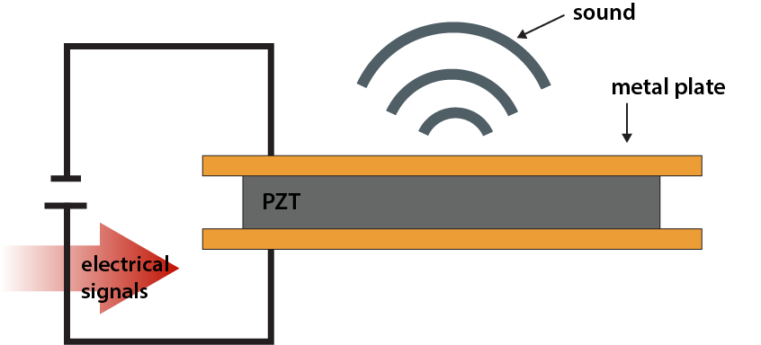

Expanding on my work modeling sound through mechanical conduction, I designed a microelectromechanical systems (MEMS) device that operates at a fraction of the size and power consumption of commercial devices.

ES276, Microelectromechanical Systems, is a graduate-level course offered at Harvard that covers the design, fabrication, and application of MEMS devices. For my final project, I designed and fabricated a MEMS transducer that can convert electrical signals into mechanical vibrations for bone conduction hearing. On this page, I document the design process, fabrication steps, and testing results of the MEMS transducer. I separately include important cleanroom skills acquired through the course.
ABSTRACT
As screen-based devices become increasingly integrated into daily life, I became interested in how sound could be delivered more comfortably and accessibly– without blocking the ear canal or isolating users from their surroundings.
The work focuses on the design and fabrication of a cartilage-mediated sound transmission transducer, which delivers audio through mechanical excitation of the outer ear rather than conventional air conduction.
Through iterative design, microfabrication, and experimental validation, this project presents a proof-of-concept device that can discretly be intergrated into wearable technology for conductive hearing applications.

PROBLEM STATEMENT
People are spending more time on screens than ever before– 7 hours per day globally, and close to 9 hours per day among Gen Z, exceeding the length of a full work shift.
At the same time, more than 2.2 billion people worldwide live with visual impairment, increasing reliance on audio as a primary interface for interacting with technology.
Most consumer audio solutions rely on in-ear headphones, which can be uncomfortable for extended use and poorly suited for continuous, ambient interaction with digital assistants or wearable displays.
These constraints motivated me to explore non-occluding, conductive sound interfaces that could better support long-term use, accessibility, and emerging screen-based devices such as smart glasses.
DESIGN & FABRICATION
Most commercially available conductive-sound transducers appear to rely on electromagnetic actuation, using coils, magnets, and moving masses to generate vibration. While effective, these mechanisms tend to be bulky, mechanically complex, and power-intensive, limiting their suitability for compact, ear-mounted devices. These constraints highlight the need for scaled-down transducer architectures that enable lighter, simpler, and more energy-efficient wearable audio systems.

The goal of this project was to build a compact intermediary device capable of transmitting sound to the user through a cartilage–mediated pathway.
Unlike traditional bone-conduction systems that depend on mechanical contact of the bone, this approach targets the outer ear cartilage, which provides a softer mederiary interface.
Inspired by low-power piezo buzzers/speakers I had worked with in past projects, I thought it would be interesting to miniaturize this concept using MEMS fabrication techniques to create a tiny, piezoelectric-based transducer.

The design of the transducer took on several iterations, but finalized to implement a layered structure with four 2x2mm lead zirconate titanate (PZT) pieces sandwiched in between two conductive plates.
These conductive plates were fabricated using photolithography, with silicon and quartz explored as substrate materials.
Quartz– a flexible yet mechanically robust material– was ultimately selected to maximize membrane displacement.
Detailed fabrication procedures are documented in the photolithography section under CLEANROOM & TECHNICAL SKILLS.

Next, the patterned substrates were carefully assembled, establishing electrical contact between the electrodes and the piezoelectric layer to enable voltage-driven actuation. To improve wearability and provide electrical isolation, the assembled transducer was encapsulated in polydimethylsiloxane (PDMS). A custom housing was then designed to maintain structural alignment while preserving sufficient clearance for maximum membrane motion, ensuring effective sound transmission.

RESULTS & DISCUSSION

Device performance was evaluated using laser Doppler vibrometry (LDV) to measure membrane displacement across frequency. Measurements were taken on the PDMS side of the transducer under different backing conditions to assess how structural constraints influenced mechanical output.
The results demonstrated that membrane flexibility is critical for efficient vibration.
Removing rigid backing significantly increased displacement, while PDMS encapsulation introduced substantial damping that reduced overall output.
These findings highlight a key design trade-off: soft materials improve comfort and wearability but can limit acoustic efficiency.
Additionally, the small piezoelectric element required relatively high driving voltages (approximately 10 V) to achieve measurable displacement.
This suggests that future iterations would benefit from thicker or stacked PZT layers to reduce voltage requirements and improve performance.
Overall, the results validate cartilage-mediated sound transmission as a viable pathway, while also identifying clear directions for optimization.
CLEANROOM & TECHNICAL SKILLS
Photolithography
Photolithography is a microfabrication technique used to pattern features on a substrate using light-sensitive photoresist materials.
The process involves coating the substrate with photoresist, exposing it to UV light through a photomask, and developing the exposed resist to create a patterned layer.
This patterned resist can then be used as a mask for etching or depositing materials onto the substrate.
In my final project, this technique was employed to create gold electrodes on both silicon and quartz substrates.

Process Steps:
1. Substrate Preparation:
The substrate (silicon or quartz) is thoroughly cleaned in each solvent bath for 5 minutes in the following order: methanol, isopropanol, and acetone.
The washed substrate is then dried using a nitrogen gun to remove any residual moisture.
Once the substrate is cleaned, photoresist coating can begin.
LOR 3A is spun as the bottom layer to form an undercut profile, followed by a top layer of S1805 positive photoresist.
Both resists are soft-baked between layers to evaporate solvents and improve adhesion.
2. Mask Alignment and Exposure:
The substrate is carefully relocated to a maskless aligner (µMLA) and secured in place.
The desired electrode pattern is aligned using the aligner software interface, ensuring precise positioning on the substrate.
Once aligned, the substrate is exposed to UV light at a dose of approximately 400 mJ/cm2.
3. Development:
After exposure, the sample is submerged in MF319 developer for around 50 seconds to remove the exposed photoresist, during which partial dissolution of the LOR layer produces a lateral undercut beneath the patterned openings.
This undercut is critical for preventing metal continuity along the resist sidewalls during deposition.
4. Metal Deposition:
Following development, metal electrodes were deposited using electron-beam evaporation (EE-5).
A thin chromium adhesion layer (∼0.01 nm) was first deposited to promote adhesion to the substrate, followed by a gold layer (∼0.18 nm) to serve as the primary conductive electrode material.
Deposition was performed normal to the substrate surface to preserve the resist undercut profile.
5. Lift-off:
The deposited pattern is revealed through lift-off using a combination of PG Remover and acetone.
The solvent dissolves the remaining photoresist stack, removing unwanted metal and all remaining photoresist.
ACKNOWLEDGEMENTS
This project was completed as part of ES276 with guidance from Fawwaz Habbal and Kamar Reda.
Fabrication was supported by the lab facilities at the Harvard Center for Nanoscale Systems, with experimental validation enabled by support from the Nakajima Lab at MEE.
1. I. S. University, “Nondestructive Evaluation Physics: Sound,” 2021.
2. L. Aranda-Lara, E. Torres-Garca, and R. Oros-Pantoja, “Biological tissue modeling with agar gel phantom for radiation dosimetry of 99mtc,” Open Journal of Radiology, vol. 2014, 02 2014.
3. J. Lim, I. Dobrev, C. Rsli, S. Stenfelt, and N. Kim, “Development of a finite element model of a human head including auditory periphery for understanding of boneconducted hearing,” Hearing Research, p. 108337, 08 2021.
4. P. Suetens, “Ultrasound imaging,” Cambridge University Press eBooks, pp. 128–158, 08 2009.
5. C. Baumgartner, P. Hasgall, F. Di Gennaro, E. Neufeld, B. Lloyd, M. Gosselin, and N. Kuster, “Dielectric properties it’is foundation,” 08 2025.
6. M. F. Griffin, Y. Premakumar, A. M. Seifalian, M. Szarko, and P. E. M. Butler, “Biomechanical characterisation of the human auricular cartilages; implications for tissue engineering,” Annals of Biomedical Engineering, vol. 44, p. 34603467, 2016.
7. S. Leicht and K. Raum, “Acoustic impedance changes in cartilage and subchondral bone due to primary arthrosis,” Ultrasonics, vol. 48, pp. 613–620, 11 2008.
8. A. Auperrin, R. Delille, D. Lesueur, K. Bruyre, C. Masson, and P. Draztic, “Geometrical and material parameters to assess the macroscopic mechanical behaviour of fresh cranial bone samples,” Journal of Biomechanics, vol. 47, pp. 1180–1185, 01 2014.
9. C. W. Connor, G. T. Clement, and K. Hynynen, “A unified model for the speed of sound in cranial bone based on genetic algorithm optimization,” Physics in Medicine and Biology, vol. 47, pp. 3925–3944, 10 2002.
10. B. Schulz, M. Thali, R. Kubik-Huch, and T. Niemann, ’Auricular dimensions in computed-tomography: Unveiling the relationship between ear dimensions, age, and sex using three-dimensional volume rendering reconstructions,’ World Journal of Radiology, vol. 16, pp. 760– 770, 12 2024.
11. A. P. Balouch, K. Bekhazi, H. E. Durkee, R. M. Farrar, M. Sok, D. H. Keefe, A. K. Remenschneider, N. J. Horton, and S. E. Voss, ’Measurements of ear-canal geometry from high-resolution ct scans of human adult ears,’ Hearing Research, vol. 434, pp. 108782–108782, 04 2023.
12.H. Wang, S. Merchant, and M. Sorensen, ’A downloadable three-dimensional virtual model of the visible ear,’ ORL; journal for oto-rhino-laryngology and its related specialties, vol. 69, pp. 63–7, 02 2007.
REFERENCES